Can a language model change the behavior of a neural cellular automaton by editing its weights directly? We study a growing gecko NCA whose 8,336 parameters define a local rule shared across space and recurrently applied through time. GPT-6 Astra produced six edits without simulation feedback: two color permutations, three spatial transformations, and slower growth. The symmetry edits reproduced their requested transformations to numerical precision; the speed edit doubled measured maturation time. In a separate, feedback-enabled stage, Astra used 36 adaptive evaluations to construct a bounded timer inside the existing network. The selected edit grew a recognizable gecko and retained its appearance through 8,192 steps in all eight unseen stochastic runs. Analysis shows that persistence comes from autonomous arrest of developmental updates. These results distinguish exact architectural symmetries from a more demanding change to long-term dynamics, and demonstrate a reproducible instance of weight-only reprogramming without gradient-based training.
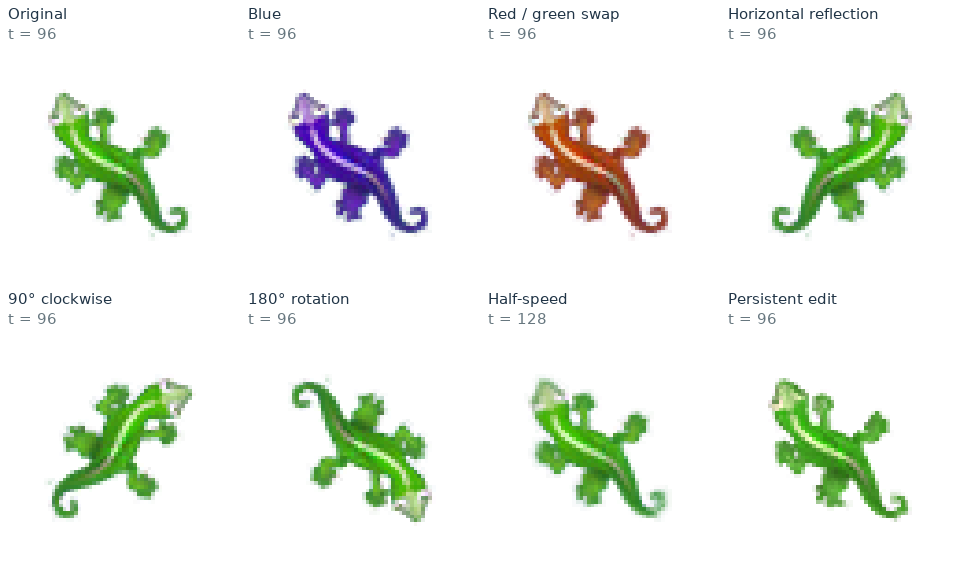
1. A local rule, a long-horizon effect
Weight-space programming asks a general-purpose language model to inspect and modify neural-network parameters around a behavioral specification. The motivating study by Takehi and colleagues explores this idea across several small networks and larger models [1]. Here the object of intervention is a neural cellular automaton (NCA), where the requested output is a developmental trajectory rather than a single prediction.
NCAs are local recurrent models. Every cell applies the same neural update rule to its own state and a small neighborhood, then feeds the updated state into the next iteration. The visible organism emerges from many such interactions. Editing one weight therefore changes computations at many locations and at every later step. A small local change can propagate, accumulate, alter cell survival, or only reveal its effect after apparently successful growth.
This recurrence makes delayed goals such as persistence especially interesting. A modification must preserve early development while changing what happens hundreds or thousands of updates later. Color and spatial symmetries provide controlled starting points; speed and persistence probe the dynamics more directly. This is a motivation from the recurrence, not a claim that every NCA edit is intrinsically harder than every feedforward-model edit.
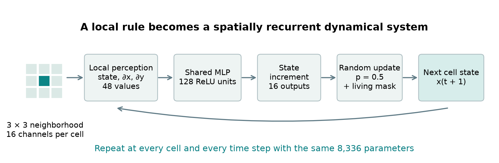
The growing NCA
The starting model is the gecko checkpoint from Growing Neural Cellular Automata [2,3]. Each cell has 16 state values: premultiplied RGB, opacity α, and 12 hidden channels. Fixed identity and Sobel operators produce 48 perception values. A shared 48 → 128 ReLU → 16 network predicts a residual update. Its four parameter arrays contain 8,336 scalars.
A Bernoulli mask with probability 0.5 selects whole-cell updates. The candidate state is x + mΔx. A cell is retained only when both pre-update and post-update 3 × 3 maximum opacity are at least 0.1. All channels otherwise become zero. The grid is 65 × 65 with zero padding; the central seed has RGB zero and channels 3–15 equal to one.
2. Experimental setup
The experimenter was GPT-6 Astra, model identifier gpt-6-astra, used on 3 November 2026. The recorded reasoning setting was inherited/default. An immutable dated model snapshot, temperature, top-p, and generation seed were not recorded, so a more precise version claim is not possible. The NCA simulation seeds and all submitted checkpoints are retained.
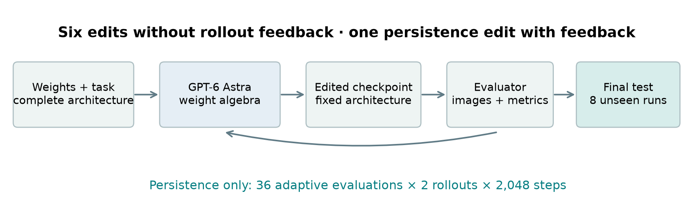
| Condition | Six algebraic edits | Persistence |
|---|---|---|
| Input | Complete weights, architecture, gecko label | Same checkpoint and architecture; diagnostic feedback |
| Allowed work | Numerical weight inspection and algebra | Weight algebra and analysis of returned trajectories |
| Feedback | None before submission | 36 evaluations; two fixed rollouts per evaluation |
| Simulation budget | Independent evaluation after submission | 72 rollouts × 2,048 steps = 147,456 grid updates |
| Final evaluation | 8 matched-noise runs; independent-noise follow-up | 8 unseen runs, audited through 8,192 steps |
| Not allowed | Training, gradients, simulation during editing | Training, gradients, fitted regression, optimizer or automated sweep |
One rollout is a complete growth simulation from the seed. One evaluation tests one submitted checkpoint and returns feedback. A grid forward pass advances one grid by one NCA step; two grids were processed together, so the persistence budget corresponds to 73,728 batched calls. The 36-evaluation stage continued an existing Astra context with 12 prior evaluations available as background. Prior-stage results are outside this report; the reported stage is not a cold-start 36-total-query trial.
Metrics and controls
Silhouette overlap is intersection-over-union (IoU) using α > 0.1. Color error is RGB RMSE over the union of candidate and reference foreground, after compositing clipped premultiplied RGBA on white. The large white background therefore cannot dominate the score. Opacity mass is the sum of clipped α, divided by reference mass. Speed and persistence reference the original step-96 state; symmetry tests reference the appropriately transformed original state at the matching step (96 or 128). References are simulated states, not withheld target-image files.
Maturity requires IoU ≥ 0.85 and RGB RMSE ≤ 0.15 by step 256, checked every eight steps. Persistence additionally requires IoU ≥ 0.80, RMSE ≤ 0.15 and opacity-mass ratio 0.8–1.2 at steps 256, 512, 1,024 and 2,048. The extended audit adds 3,072, 4,096, 6,144 and 8,192. At least seven of eight complete trajectories must pass. A separately trained persistent gecko serves only as a positive control and was unavailable to Astra.
All reported main tests use the published uint8 checkpoint decoded to float32. Activations and edited weights are float32; this is not a bitwise reproduction of the WebGL demo’s texture quantization or periodic boundaries. Tool restrictions were instructed and the evaluator metered calls, but access was not isolated against a malicious experimenter.
3. Can weight edits change the colors?
The first requests were to make the gecko blue and to exchange its red and green colors. “Blue” was operationalized as swapping green and blue. Astra submitted complete channel permutations that change the recurrent state representation, rather than modifying only the displayed pixels.
Uniform sampling: one frame every 4 NCA steps. These are recorded NCA states, not generated illustrations.
What Astra changed
For a permutation P of visible state channels, Astra permuted the corresponding input rows in all three perception blocks of W₁, the output columns of W₂, and the entries of b₂. The hidden bias b₁ is unchanged. Altering both input and output coordinates is essential because visible channels are read again on the next step. Swapping output channels alone would change subsequent feedback.
Here P̃ repeats the same channel permutation across state, x-gradient and y-gradient inputs. The seed has zero RGB, and the opacity mask is unchanged. Consequently the entire recurrent trajectory is permuted in ideal arithmetic under identical stochastic update masks. This construction does not require identifying which neurons encode the gecko’s anatomy.
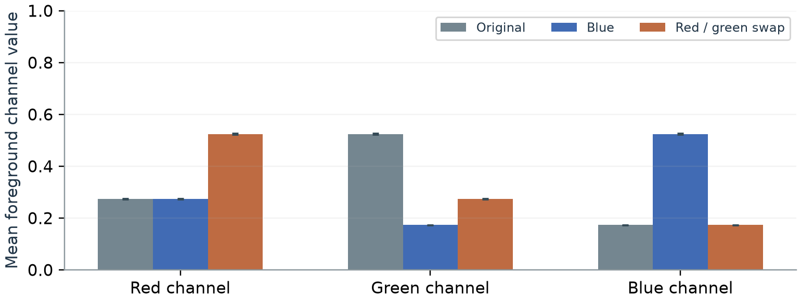
Both edits passed all eight matched-noise tests at steps 96 and 128. Every silhouette IoU was 1.0. Across the five symmetry edits, the largest RGB RMSE at step 128 was 2.23 × 10⁻⁷. The blue edit changes 1,004 parameters; the red–green edit changes 1,014. Zero-valued or identical entries can remain numerically unchanged even when a row or column is permuted.
4. Can the organism grow in another orientation?
The next requests were horizontal reflection, clockwise rotation by 90°, and rotation by 180°. Horizontal reflection defines “facing the opposite direction” in this report. Screen coordinates increase to the right and downward. The original gecko’s head points toward the upper left.
Uniform sampling: one frame every 4 NCA steps. These are recorded NCA states, not generated illustrations.
Write W₁ as three stacked blocks A, B and C for state, x-gradient and y-gradient inputs. Astra changed only the derivative blocks:
| Transformation | New x-gradient block | New y-gradient block | Changed parameters |
|---|---|---|---|
| Horizontal reflection | −B | C | 2,048 |
| 90° clockwise | −C | B | 4,080 |
| 180° rotation | −B | −C | 4,096 |
A reflection reverses one gradient direction; rotation exchanges and/or reverses the Sobel axes. The state block and output layer remain intact. The square grid, centered seed and isotropic living mask respect these spatial symmetries. For a pathwise comparison, the random cell-update masks must undergo the same spatial transformation as the reference.
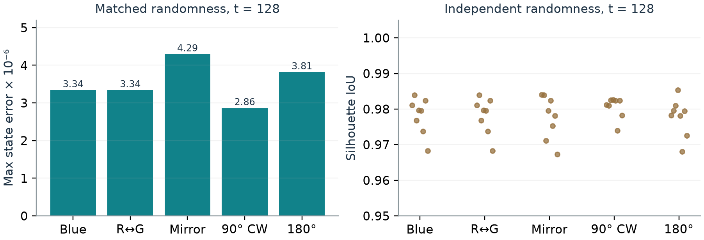
All five color/spatial transformations had IoU 1.0 in every matched-noise test. The largest full-state error was 4.29 × 10⁻⁶. With a fresh random stream, the worst overlap across these edits was 0.967 and the largest foreground RGB RMSE was 0.0445. These results separate exact symmetry of the rule from ordinary trajectory variation under independent stochastic updates.
5. Can the same network grow more slowly?
Astra halved every weight and bias in the output layer: W₂′ = 0.5W₂ and b₂′ = 0.5b₂. At a fixed state, this halves the residual update. The firing probability remains 0.5, and the simulator still executes the same number of time steps.
Uniform sampling: one frame every 4 NCA steps. These are recorded NCA states, not generated illustrations.
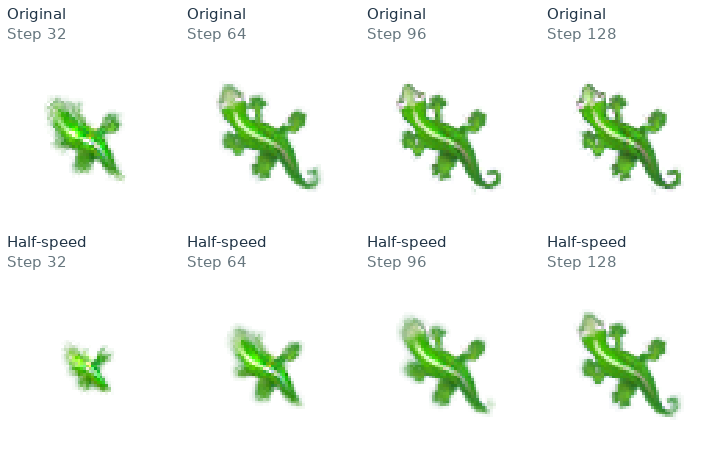
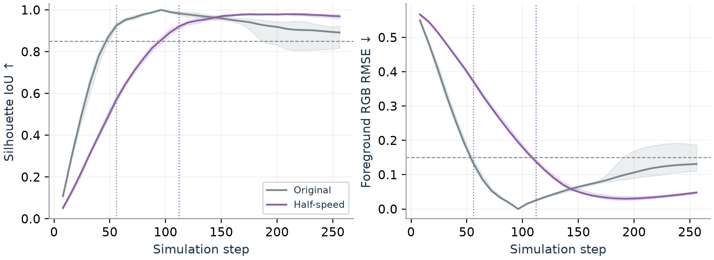
All eight original runs first met the maturity criterion at step 56; all eight edited runs did so at step 112. The median ratio is therefore 2.0, at the eight-step sampling resolution. This edit changes 2,064 parameters. The comparison curves use the same eight-run random stream as the archived test, replayed with denser snapshots for plotting.
The mechanism resembles reducing an Euler integration step, but it is not an exact stochastic time reparameterization. ReLU thresholds, cell survival, discrete updates and accumulated noise can produce trajectory differences. The evidence supports approximately doubled developmental time for this checkpoint, not a guarantee that every state at time 2t exactly equals the original state at t.
6. Can a growing NCA remain persistent?
Persistence changes long-term behavior while requiring early development to remain recognizable. Astra used 36 new adaptive evaluations, each running two fixed stochastic trajectories for 2,048 steps. Feedback included images, quality scores, saved states, hidden activations and update vectors. It committed one final checkpoint before seeing the eight fresh test runs.
Checkpoint playback: unequal time gaps. Read the step counter; playback speed is not simulation speed. These are recorded NCA states, not generated illustrations.
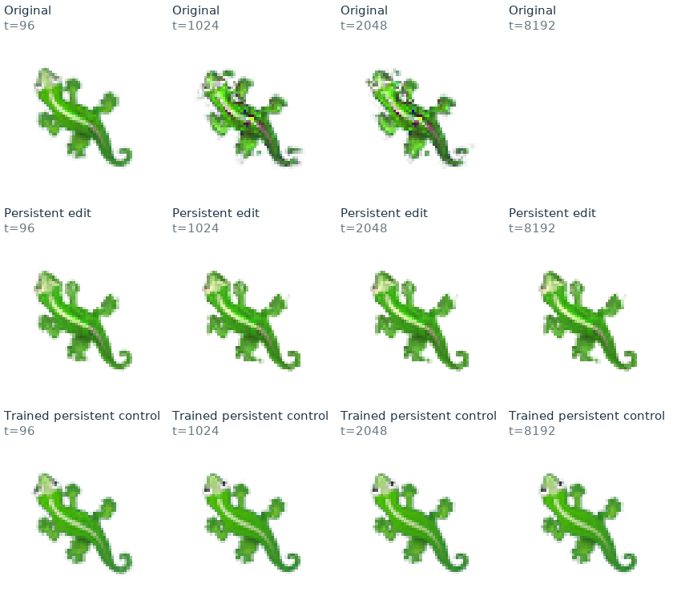
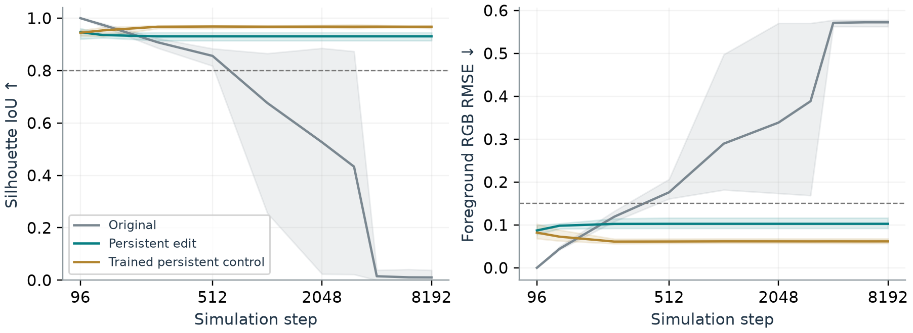
The selected edit matures in 64–72 steps on unseen runs. At step 8,192 its mean IoU is 0.9306, foreground RGB RMSE 0.1026 and opacity-mass ratio 0.9778. The corresponding ranges are 0.9144–0.9456, 0.0922–0.1163 and 0.9695–0.9891. The same appearance is retained at step 2,048. These are stochastic replicates of one edited checkpoint, not eight independently trained models or eight separate LLM attempts.
7. Programming autonomous arrest
Inspection of Astra’s construction and the saved internal states shows why the persistence edit works. It repurposes three existing hidden neurons to implement a bounded local timer. The architecture is unchanged, while 1,461 of 8,336 parameters (17.5%) change. The simulator continues updating throughout.
A timer in a color difference
Astra approximates blue using B = R − 0.2G in the developmental computation, creating the timer coordinate q = B − R + 0.2G. Corresponding input and output substitutions make ordinary growth updates preserve q in ideal arithmetic. The seed starts with q = 0. A tiny added increment makes q drift until a trigger is reached.
The constants are a = 10⁻⁵, w = (0.01002 − 0.00001)/251 and ε = 2.5 × 10⁻⁷. Existing units 100 and 16 implement the trigger and saturation. After roughly 40 local cell firings, q moves rapidly toward the bounded value −0.01002025. Local firings are not a global stopwatch: cells entering the living region later can receive additional development time.
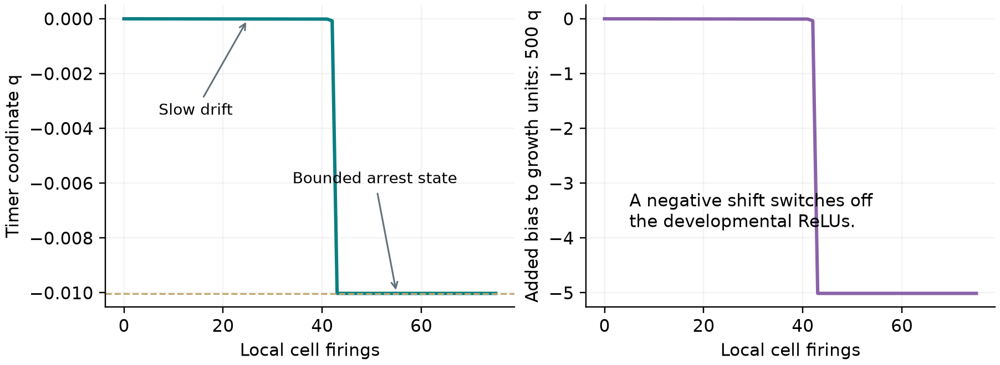
Turning the growth rule off
Each of the remaining 125 growth neurons receives an added 500q in its preactivation. Near the timer’s final value, this contributes approximately −5.01 and suppresses those ReLUs. Unit 6 carries the original output bias through ReLU[0.1 + 0.02(α − 0.8) + 500q]. Its opacity dependence helps suppress continued frontier growth, while the timer eventually shuts the bias off too.
Across all eight held-out grids, every non-blue state channel is bitwise unchanged between steps 2,048 and 8,192. The maximum blue-channel change is 2.35 × 10⁻⁷. The result is appearance preservation by autonomous arrest. Regeneration after damage, active homeostasis and indefinite stability were not demonstrated. Edited weights remain float32; requantization into the original uint8 demo format was not tested.
8. What the results establish
| Requested behavior | Weight mechanism | Verified outcome |
|---|---|---|
| Blue gecko | Green–blue state conjugation | 8/8 exact-transform tests |
| Exchange red and green | Red–green state conjugation | 8/8 exact-transform tests |
| Opposite facing | Negate x-gradient block | 8/8 exact-transform tests |
| Rotate 90° clockwise | Exchange derivative blocks with a sign | 8/8 exact-transform tests |
| Rotate 180° | Negate both derivative blocks | 8/8 exact-transform tests |
| Grow more slowly | Halve output-layer residuals | 56 → 112 steps; 8/8 mature |
| Persist after growth | Bounded local timer and gated updates | 8/8 through 8,192 steps |
The color and geometry results are controlled examples of architectural reprogramming. Their algebra preserves the recurrent computation under a change of coordinates. Success does not require recovering a semantic map from particular neurons to the gecko’s head, legs or tail. The slowing edit exploits the residual form of the update and has a less exact relation to the full stochastic trajectory.
Persistence is different: it introduces a new temporal mechanism inside the fixed network. Early attempts within the 36-evaluation stage either damaged growth, allowed the boundary to expand, or arrested an inaccurate color pattern. The first complete two-run development success occurred at evaluation 13. Later edits improved the color relation, the choice of neurons to repurpose, and frontier control. Tests of timer strength, timing, numerical scaling and nearby developmental weights supplied evidence about robustness, but reused the same development seeds.
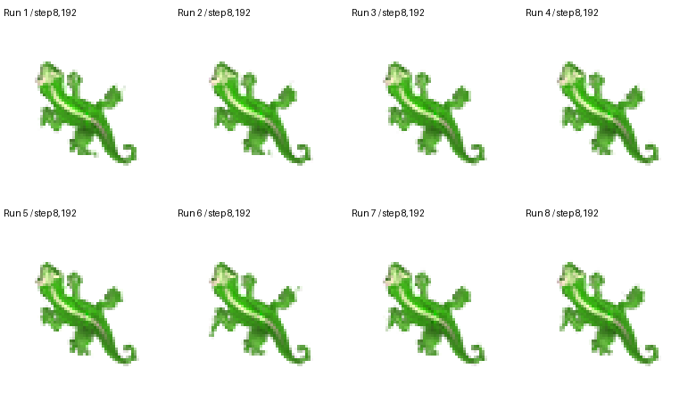
The independent audit supports the final mechanism on this one trained gecko checkpoint. It does not establish generality across morphologies, training seeds, architectures or language models. The persistence result is stronger than merely slowing collapse within the observation window: growth completes promptly, and developmental updates then become inactive. Nevertheless, finite-horizon numerical arrest is not a proof of an indefinitely stable or self-repairing organism.
9. Reproducibility and research record
The public GitHub repository and its companion archive contain the original checkpoint, all seven selected edits, the trained persistent control, a NumPy simulator, exact weight-construction code, per-run metrics and the 36-stage experiment log. Each checkpoint is stored as float32 arrays W₁, b₁, W₂ and b₂. The persistence reconstruction script reproduces the committed checkpoint exactly; hashes make the selected files auditable.
| Resource | Location in the companion bundle |
|---|---|
| Web report and PDF | index.html; report.pdf |
| Exact six-edit construction | code/edits.py |
| Exact persistence construction | code/persistence.py |
| Simulator and independent evaluation | code/nca.py; code/evaluate.py |
| Original, edited and control weights | weights/*.npz |
| Numerical results and source metadata | data/ |
| Astra’s hypotheses and explanations | records/ |
| Synchronized growth and checkpoint animations | animations/ |
Access to Astra’s recorded reasoning
The record includes the concise hypotheses written before each metered evaluation, observed outcomes, committed rationale, and executable reconstruction. These are accessible research notes that explain what was tried and why. They are not a complete private internal chain-of-thought. The six-edit rationale is a clearly marked excerpt; superseded tasks are omitted from this presentation.
Evaluation of the six edits uses NumPy RNG seed 20261103; the independent-noise check uses 20261104. Persistence development uses 391071; its unseen audit uses 73510991. The same test random stream is applied to original, edited and control checkpoints. Runtime versions, hashes, numerical conventions and commands are listed in the archive. Uniformly sampled growth animations and unequal-time long-horizon checkpoint players are labeled separately.
AI use disclosure
Stefano Nichele conceived the ideas in this work, designed the experiments and experimental setups, directed the revisions, and reviewed and checked the material. AI assistance, through Codex and GPT-6 Astra, supported coding, running the experiments and evaluations, and report preparation. GPT-6 Astra also generated the weight-edit proposals studied in the experiments, as documented in the methods and research records. The AI-assisted material and final report were checked by Stefano Nichele, who retains responsibility for the work and its conclusions.
References
[1] Rikiya Takehi, Jayden Teoh, Alex Zhang and Omar Khattab. Sparks of Weight-Space Programming: LLMs can natively read & write neural network weights. 2 November 2026. Project article.
[2] Alexander Mordvintsev, Ettore Randazzo, Eyvind Niklasson and Michael Levin. Growing Neural Cellular Automata. Distill, 2020. DOI: 10.23915/distill.00023.
[3] Original article code and checkpoints; reference training notebook. The bundled original code license and pinned checkpoint source are retained.
Web companion: Read the online report to play and scrub the simulations, or open index.html in a downloaded repository copy. The PDF presents selected frames from the same experiments. No simulated outcome in this report was synthesized by an image-generation model.
Astra’s research notes
Inspect the recorded experimental hypotheses and submitted explanations below. These are the available research artifacts, not a complete private internal chain-of-thought.
Six-edit submitted rationale
Excerpt of Astra’s submitted explanations for the six retained edits. The superseded persistence proposal is omitted. One-shot Model A weight-only submission Scope and provenance Only the supplied model_A.txt was read. Its four arrays were parsed for weight-norm inspection. No state, simulator, image, trajectory, external source, forward pass, training, optimization, search over edits, or evaluator feedback was used. The seven candidates are independent copies of the original weights. No architecture or runtime setting changes. The gecko label does not enter the numerical edits. 1. blue: exchange channels 1 and 2. For each of the state, dx and dy input blocks, swap the green and blue rows of W1. Swap the corresponding W2 columns and b2 entries. Leave b1 unchanged. This conjugates the entire dynamics by the green/blue permutation, including color feedback. Alpha and hidden state are unchanged, as is the seed, whose RGB entries are zero. Predicted outcome: the same morphology with green and blue exchanged. Very high confidence in the algebra; numerical differences can accumulate. Merely swapping output columns would not preserve feedback and is deliberately avoided. 2. swap_red_green: exchange channels 0 and 1 with the same full conjugation. Predicted outcome: identical morphology with red/green exchanged. Very high algebraic confidence. Both RGB swaps commute with the alpha life mask and display channel clipping, and white is permutation-invariant. They are exact for coupled identical update masks in ideal arithmetic. 3. mirror_horizontal: negate W1 rows 16:32 (the dx block). Horizontal reflection reverses the x derivative and preserves the y derivative. Everything else is untouched. Predicted outcome: horizontal reflection, hence opposite facing direction as explicitly defined. Very high confidence in the symmetry algebra. 4. rotate_90_clockwise: replace W1 dx block with minus the original dy block, and its dy block with the original dx block. In screen coordinates, clockwise maps (x,y) to (-y,x). For a rotated scalar channel, dx_new=-dy_old and dy_new=dx_old. Thus the new input combination dx_new*(-Wdy)+dy_new*Wdx equals the original derivative combination. Predicted outcome: whole morphology rotated clockwise by 90 degrees. Very high algebraic confidence. 5. rotate_180: negate both derivative blocks, W1 rows 16:48. Predicted outcome: 180-degree rotation. Very high algebraic confidence. Spatial caveats: square-domain symmetries and the center seed must transform consistently; on even grids an index-centered rotation/reflection can shift the single seed one cell relative to the chosen geometric center. The isotropic 3x3 life rule and Sobel pair respect these lattice symmetries. With spatially transformed random update masks, symmetry is pathwise in ideal arithmetic; with independent masks it is distributional, not an assertion of pixelwise equality between two independent samples. Rectangular domains require rotation of the domain itself for an exact 90-degree global equivalence; morphology away from boundaries should still obey the local construction. 6. grow_half_speed: multiply every entry of W2 and b2 by 0.5. This halves the residual vector at any fixed state and retains the .5 update probability. Predicted outcome: approximately doubled time to reach the developed gecko, if its dynamics tolerate smaller updates. Medium confidence for approximate slowing, lower for precise 2x developmental timing. This is a smaller Euler step, not an exact discrete time reparameterization: stochastic variance, nonlinear trajectories, and the thresholded life mask can change. No claim that this fixes long-term persistence.
Persistence: 36 hypotheses and observations
01 Hypothesis: blue and red carry partly redundant visual information. Enforce blue=.6red and substitute the same relation in all perception weights, freeing a potential latch coordinate without changing architecture. This initial test asks whether development survives the constraint; no arrest yet. Ratio .6 is a simple heuristic, not fitted regression. 01 interpretation: blue constraint preserves maturation at56 and t96 appearance, but worsens long-time drift. Useful representation for a latch, not a persistence solution. 02 hypothesis: use q=blue-.6red as a bounded exponential timer. Repurpose units7,78 for timer growth and saturation and115 as gated bias carrier. Negative q suppresses original hidden units and eventually all physical updates; three removed units may harm growth. Gate2, initial drive1e-5, timer gain.2. Static construction only. 02 interpretation: timer does arrest many cells but transition badly distorts geometry and new peripheral cells keep growing; reject this implementation. 03 hypothesis: W2 has one near-null output singular value .075 versus next .400. Quantization may introduce drift in an approximately conserved channel combination. Project W2 and b2 orthogonally to its smallest right singular vector, restoring an exact invariant. This is static SVD of weights, not a fitted regression, gradient or optimization. 03 interpretation: exact conserved near-null output mode still develops well but fails late. Eliminating all adaptive motion in that mode is wrong; a restoring feedback might work better. 04 hypothesis: measure whether removing low early-contribution units7 and16 preserves development. They are potential slots for a two-ReLU signed homeostatic feedback term, unlike the prior unsuccessful replacement of24 units. No added feedback in this diagnostic candidate. 04 interpretation: removal preserves maturation but destabilizes late dynamics, so spare units are not truly dispensable. 05 hypothesis: replace only unit16 with an always-active linear homeostatic term -.01*z*(z dot state), where z is the smallest right singular vector of original W2. Large bias10 plus compensating b2 makes one ReLU implement signed feedback on bounded states. This arrests accumulating color/alpha imbalance while allowing original nonzero mode updates; unit7 and115 remain intact. 05 interpretation: feedback prevents extinction and one run remains gecko-like but second expands severely. Unit16 removal may induce spatial vulnerability. 06 hypothesis: retain the identical signed near-null-mode feedback but place it in lower early-contribution unit7, restoring original16. This separates homeostat behavior from donor damage. 06 interpretation: unit7 donor leads to extinction. Donor choice critically matters; return to16, which preserved viability. 07 hypothesis: the homeostat should preserve a nonzero mature mode rather than force it tozero. Modify target to z dot x=.05alpha, a simple near-mature magnitude motivated by observed positive mode at96. Retain .01 gain and original neuron7. 07 interpretation: nonzero target improves aggregate score slightly but retains severe expansion in one trajectory. 08 hypothesis: revise autonomous latch to a linear tiny clock followed by rapid gain1 runaway and stable saturation. Initial rate2e-6, threshold.0002, gate5. Keep protective115 and use7/16/111 instead. The long almost-invisible delay followed by fast switching should avoid the gradual distortion in02; blue clips tozero after latch, which may consume color-error tolerance. 08 interpretation: better initial development but ongoing peripheral growth and latch-transition distortion persist. 09 hypothesis: make threshold crossing almost abrupt using capped gain100 feedback: -100[relu(-q-.0001)-relu(-q-.0101)], with tiny clock drive unchanged. Later q decreases linearly rather than exponentially, finite over audit horizons. Faster arrest near age100 should minimize perturbation before shutoff. Same donor slots and gating; representation explicitly permits a changing clipped blue clock after visible arrest. 09 interpretation: successful autonomous visible arrest near256, stable shape thereafter. IoU .897/.895 but color RMSE .189/.181 fails. Blue clipping consumes tolerance; timer mechanism itself is useful. 10 hypothesis: move redundant coordinate to hidden space. Remove lowest mature-energy hidden direction constrained orthogonal to seed all-ones vector. Static covariance eigendecomposition defines an orthogonal representation projection, not regression. First test development with no clock: all visible channels retained. Eigenvalue 0.0456493659407764; vector [ 0.23905991 -0.37546003 -0.2844506 0.32089102 0.26210135 0.166389 0.40171653 -0.573277 0.08780065 -0.03117235 -0.0997619 -0.11383665] 10 interpretation: hidden projection distorts growth too much, so blue representation remains more promising. 11 hypothesis: retain blue clock but bound its final displacement at about-.01002 rather than letting blue cliptozero. Two hinges with gains-1000 and1001 at thresholds1e-5 and2e-5 yield derivative -q-.01002 after crossing, hence one-step attraction to a tiny offset. Gate500 makes that tiny offset sufficient for arrest. Initial rate1e-7 gives roughly200 steps of local aging, while threshold crossing is sharp. Float32 precision may perturb clock timing; that is tested by the evaluator. 11 interpretation: bounded small-amplitude clock arrests eventually but too late, after visible drift and some peripheral growth. It used local age200 versus age100 in09. 12 hypothesis: double tiny clock rate to2e-7, aligning local arrest age around100 with the successful-shape09, while retaining bounded blue offset and thus preserving blue intensity. 12 interpretation: one full trajectory passes; both visibly arrested, one misses RGB by .0064. Drift before latch still harms color: at96 both RMSE near.11. 13 hypothesis: start the same sharp bounded latch earlier by clock rate3e-7 (local age about67), capturing the mature phenotype before donor-induced color drift. Growth itself matures at64, and late-born cells retain additional development time. 13 interpretation: BOTH development trajectories pass all criteria. Visible arrest holds through2048, but RGB margin only .014/.019 and alpha mass .922/.914. 14 hypothesis: donor111 contributes substantial positive alpha (.174 output weight); donor6 has lower visible contribution and slight negative alpha. Move bias-carrier role from111 to6, restoring111 including its normal gated outputs. This should preserve opacity and color during development while retaining the exact same autonomous clock. 14 interpretation: donor substitution improves both margins substantially: final RGB .117/.111, IoU .920/.914, but mass .925 remains low. 15 hypothesis: bias-carrier activation scale .1 loses up to5percent amplitude during the supposedly quiet timer phase, because gate500*q reaches-.005. Raise carrier scale to.5 and divide its output by5 to preserve original bias while reducing pre-latch attenuation. This also delays bias shutdown within the brief transition; test whether opacity recovers without overshoot. 15 interpretation: carrier scale.5 causes a continuing peripheral growth wave despite acceptable central appearance. Bias shutdown must remain early to avoid fertilizing the boundary. Restore.1. 16 hypothesis: restore donor16, whose visible output norm is relatively large (.183red,.165blue), and use100 for saturation hinge instead. Unit100 has lower observed visible contribution despite somewhat larger total hidden contribution. Keep successful14 clock/gate parameters. 16 interpretation: donor100 still yields two passes but lower silhouette margin; retain donors7/16/6 from14. 17 hypothesis: improve blue reconstruction to blue=red-.2green, a simple chromatic relation with the correct approximate mean and seed-zero timer coordinate. This preserves more color variation than .6red; no fitting or regression. Rewrite perception, blue output and clock consistently. Static residual RMS is diagnostic only. 17 interpretation: blue=red-.2green improves color margins to .109/.103; both pass and arrest. 18 hypothesis: donor7 carries positive alpha feedback, potentially explaining remaining low opacity. Restore7 and use100 for the trigger hinge instead, keeping16/6 roles. Previous16->100 worsened silhouette, but this tests a different missing feedback path: preserving7 while retaining16 removal. 18 interpretation: restoring7 improves all margins, two passes, final RGB .103/.098, IoU .929/.926. 19 hypothesis: timing robustness test, slow clock by17percent to local age80. The mechanism should tolerate slightly later maturity capture; this also tests whether shape gains from more development outweigh drift. Use18 construction otherwise. 19 interpretation: slower clock remains two passes, RGB .104/.101. Saved18 diagnostics show all125 normal hidden units exactlyzero on foreground by256, all non-blue deltas zero, and only <1e-6 blue fluctuation after512. This supports actual arrest rather than slowed dynamics. 20 hypothesis: complementary timing robustness test, increase clock rate17percent above18 to local age57. This tests whether earliest stochastic cells freeze before adequate development; if it passes, the operating point has timing margin on both sides. 20 interpretation: faster arrest creates peripheral traces and one silhouette fails (.797), despite good RGB. Prefer slower19 timing as safer boundary relaxation. 21 hypothesis: halve gate sensitivity to250 at19 timing, reducing pre-arrest perturbation. Final q~-.01002 still supplies a2.5 preactivation subtraction, comfortably exceeding observed mature positive activations near1.3. This may improve morphology while retaining complete arrest; verify hidden activations from returned diagnostics. 21 interpretation: lower gate retains passes but permits peripheral additions and worse silhouette; keep500 gate. 22 hypothesis: suppress fertile low-alpha boundary cells by mild alpha dependence in the bias carrier: h=.1+.02(alpha-.8)+500q. At mature opacity the original bias is retained, but low-alpha frontier receives less positive bias. Use19 clock timing and donors. This may prevent post-arrest peripheral growth, though it could impair initial development. 22 interpretation: mild alpha-dependent carrier improves silhouette and arrests all visible growth; both pass with IoU .931/.931. 23 hypothesis: strengthen the alpha dependence from.02 to.04 to test whether boundary suppression has room before impairing morphogenesis. Original bias still matched atalpha.8. This is a robustness/mechanism test; larger coupling may slow or shrink development. 23 interpretation: doubling alpha dependence still passes but color worsens, so.02 is preferable. 24 hypothesis: revisit the fast local-age57 clock that caused peripheral traces in20, now with alpha-dependent carrier from22. Passing would specifically support the proposed boundary-suppression mechanism and widen timing robustness. 24 interpretation: fast clock now passes both and stops peripheral additions, supporting alpha-dependent boundary gating rather than accidental timing. 25 hypothesis: test the other side, a20percent slower clock than22 (local age100). With the same boundary suppression, this should still capture a mature form before substantial drift; confirms timing tolerance over a meaningful interval. 25 interpretation: slower clock also passes, confirming useful local-age57-100 range with alpha gate. 26 hypothesis: test moderate20percent lower gate strength400 on22, retaining alpha suppression. Unlike21 at250 without alpha dependence, this should retain enough final shutdown margin while reducing quiet-phase perturbation. 26 interpretation: gate400 passes and remains visibly arrested, with similar color and slightly better auxiliary score. 27 hypothesis: complementary20percent stronger gate600 test around22. If quiet-phase suppression is not critically tuned, morphology should survive stronger shutdown, establishing a broad gate interval rather than selecting a single favorable scalar. 27 interpretation: gate600 also passes, with similar appearance;400-600 is robust on these two seeds. 28 hypothesis: test sensitivity to small distributed perturbations of the developmental network. Add fixed random noise of standard deviation1e-4 to original weights/biases, then rebuild the exact clock representation and gate. This preserves timer algebra while perturbing growth; it is a robustness test, not a search for favorable random weights. Noise seed739431, recorded for reproducibility. 28 interpretation: distributed developmental weight perturbation1e-4 preserves both passes and similar metrics. 29 hypothesis: use the exact negative of that perturbation, testing both sides of the same neighborhood rather than selecting favorable noise. Rebuild all clock identities exactly as before; no intended improvement over22. 29 interpretation: opposite perturbation also passes, supporting a nonzero developmental neighborhood. 30 hypothesis: increase the same fixed perturbation to1e-3, a tenfold stress test of developmental robustness. The engineered latch identities remain exact. This is not intended as the selected candidate, even if its score improves. 30 interpretation: even1e-3 developmental perturbation passes with good margins; latch is robust to substantial small network changes when its identities are preserved. 31 hypothesis: reverse all128 hidden-unit indices, a mathematically equivalent network that changes float32 summation order. This probes reliance on a particular numerical cancellation pattern; no new developmental design is introduced. 31 interpretation: mathematically equivalent hidden permutation passes and has nearly identical metrics, ruling out dependence on a unique summation order. 32 hypothesis: reduce trigger gain from1000 to250, enlarging hinge spacing analytically to preserve final clock target-.01002. Smaller opposing output weights reduce numerical cancellation while retaining rapid threshold transition. Quiet-phase timing, gate and alpha dependence unchanged. 32 interpretation: fourfold lower gain250 improves silhouette/mass and keeps arrest; both pass with IoU .939/.940 and RGB .101/.095. 33 hypothesis: push the same analytical gain reduction to64 with unchanged equilibrium target, testing whether a less stiff transition is sufficient. This establishes whether250 is safely above a transition-speed requirement or still unnecessarily large; slower transition may again distort boundaries. 33 interpretation: gain64 still passes, but degrades appearance slightly;250 is an interior, less stiff and better-margin choice. 34 hypothesis: halve the clock coordinate scale of32 (threshold,width,drift allhalved; gate doubled), an analytically equivalent physical-control trajectory with half the blue displacement. This tests finite-precision sensitivity when clock increments approach smaller floating-point scales, rather than changing intended timing. 34 interpretation: half-scale clock also passes with nearly identical morphology; control does not rely on one clock-unit scale. 35 hypothesis: test the opposite coordinate rescaling, doubling threshold,width and drift while halving gate. This improves clock signal relative to float32 rounding but doubles the tiny blue offset; physical intended trajectories remain equivalent. Prefer central32 if both rescalings work. 35 interpretation: doubled coordinate scale also passes with nearly identical metrics;32 sits between two successful numerical scalings. 36 hypothesis: final reproducibility stress test constructs32 algebra in float64 then rounds once tofloat32, rather than accumulating float32 edits. This changes rounding of large gate cancellation and blue substitution slightly while preserving intended mechanism. It tests construction precision dependence; final selection remains based on the complete evidence, not this last score alone. 36 interpretation: float64 construction also passes with virtually identical results. NEW BUDGET EXHAUSTED36/36. FINAL COMMITMENT: evaluation32; sha256 04a6d67331bc97ae3102e4849e178e680ab8d86a20f33e6370f85a1163f33354. Reconstructed arrays and serialized NPZ hash exactly match archived weights. No further revisions or forward calls.
Persistence: committed mechanism and explanation
FINAL COMMITMENT BEFORE NEW HELD-OUT TESTS Selected checkpoint: evaluation 32, final/selected.npz. SHA256: 04a6d67331bc97ae3102e4849e178e680ab8d86a20f33e6370f85a1163f33354 RESULT Both development trajectories pass every predeclared criterion. Both first mature at step 64. At steps 256, 512, 1024 and 2048, silhouette IoU remains 0.9385066 / 0.9399707; foreground RGB RMSE is approximately 0.1012256 / 0.0952469; alpha-mass ratio is 0.9782352 / 0.9638817. The organism develops and then autonomously arrests. This is appearance preservation, not a demonstration of regeneration or continued active homeostasis. The arrest is supported by saved computations, not just similar pictures. At steps 256, 512 and 1024, all 125 remaining original hidden neurons have exactly zero activation on foreground cells, and every non-blue output delta is exactly zero there. Across the entire saved grid, every non-blue state channel is bitwise unchanged from 512 to 2048. The maximum blue change is 2.31e-7. The largest absolute state in any saved snapshot is 6.70775. The internal timer is bounded. No runtime freeze or change to the simulation was used. WHAT CHANGED The original 48-input, 128-ReLU, 16-output architecture is intact. The seed, firing probability, boundaries, rendering, alive mask and recurrence are unchanged. Only the four weight/bias arrays were edited. The exact static construction is in build_selected.py. 1. Use partial RGB redundancy to make a timer coordinate q = B - R + 0.2 G. In the developmental network, substitute B = R - 0.2 G in identity and Sobel perceptions, and make its blue output increment equal to its red increment minus 0.2 times its green increment. The ordinary developmental network then preserves q in exact arithmetic. The initial seed and new zero cells have q = 0. This color relation was a hand-chosen simple approximation, not a fitted regression. 2. Repurpose three existing hidden units: unit 100 is a timer trigger, unit 16 provides timer saturation, and unit 6 carries the output bias behind a state-dependent gate. The other 125 units retain the original developmental computation after the color substitution, with an additional 500 q in each preactivation. 3. The timer's unmasked scalar increment is dq = -250 ReLU(-q - a) + 251 ReLU(-q - a - w) - epsilon, where a = 1e-5, w = (0.01002 - 0.00001)/251, and epsilon = 2.5e-7. It first drifts very slowly, reaching the trigger after approximately 40 cell firings (about 80 simulation steps for a continuously surviving cell). It then moves rapidly to a bounded negative value. Beyond the second hinge, dq = -q - a - 251 w - epsilon, so one firing returns q to approximately -0.01002025. Float32 rounding produces the tiny observed residual variation. Each cell's timer starts as it becomes part of the living region, so late-grown cells get development time too. 4. The original output bias is moved into unit 6, whose activation is ReLU(0.1 + 0.02(alpha - 0.8) + 500 q), and whose output vector is the color-substituted original bias divided by 0.1. All external output biases are zero except the tiny blue timer drift. The mild alpha dependence reduces positive bias at low-opacity frontiers; this stopped peripheral growth that occurred in some earlier latch variants. 5. At the negative timer equilibrium, the ordinary preactivations receive approximately -5.01. This switches off their updates and the bias carrier after development. The timer itself remains in a stable bounded regime. The small final blue offset retains color much better than the early unbounded-clock attempt, which clipped blue to zero. WHY THIS CHECKPOINT Evaluation 32 uses an interior transition gain and timer scale with strong margins. Gain 64, 250 and 1000 constructions all passed. Half-scale and double-scale clock coordinates produced almost identical passing shapes, as did constructing the same algebra in float64 before rounding to float32. Earlier versions of this same mechanism passed over meaningful clock-rate and gate-strength ranges. Paired developmental-weight perturbations of +/-1e-4, a 1e-3 stress perturbation, and a mathematically equivalent hidden-unit permutation also passed when the timer identities were preserved. Those tests used the same two development seeds: they support the mechanism but are not independent-seed validation. I selected the central-scale gain-250 construction rather than a perturbed sample or the tiny highest-scoring numerical variant. Arbitrary perturbations to the completed engineered arrays were not tested and need not preserve its exact timer identities. EXPERIMENT RECORD AND FAILURES All 36 new evaluations were used: 72 rollouts of 2048 steps, or 147,456 grid forward passes. Together with the prior 12 evaluations, the informed research sequence totals 48 evaluations and 196,608 grid forward passes. This is not a clean 36-query from-scratch experiment. The supplied prior baseline, previous best and prior held-out failure informed the new work; the separately trained persistent control was never accessed. Across the 36 new candidates, 22 passed both development trajectories, 2 passed one, and 12 passed neither. All hypotheses were logged before the corresponding evaluation. All failed candidates and archived evaluator outputs remain preserved. all_results.csv gives a concise row for every candidate; all_results.json includes checkpoint hashes and the four required time-point metrics. The initial blue representation alone preserved development but collapsed later. Slow or poorly bounded latches distorted the organism. A hidden-space projection, exact near-null output projection, and low-rank restoring feedback did not solve persistence. The first useful arrest mechanism appeared at evaluation 9 but failed color tolerance. A bounded small-blue latch first passed both trajectories at evaluation 13. Donor selection, a better simple color relation and the alpha-dependent bias gate improved its margins. Later calls tested robustness and numerical behavior rather than hiding failures or repeatedly evaluating new seeds. No training, gradients, fitted regression, optimizer, automated sweep, external checkpoint or unmetered forward/layer evaluation was used. Static diagnostics included weight SVD, state covariance eigendecomposition, saved activations, state statistics and saved output deltas. The spectral experiments were unsuccessful and are not part of the selected construction. Every network evaluation was through the budgeted evaluator. PREDICTION AND LIMITS Before any new held-out feedback, I predict 7-8 of 8 unseen trajectories will pass at 2048, with passing organisms remaining visually stable through 8192. Subjective confidence in the >=7/8 target is about 80% at 2048 and 75% through 8192. This is a moderately confident prediction, not an observed result. Only two fixed developmental trajectories were available. The principal remaining risk is different stochastic development producing a malformed boundary or a late peripheral growth chain before all cells arrest. Once the selected trajectory has reached the observed quiescent configuration, the analytical mechanism and exact saved non-blue zeros support continued stability. REPRODUCIBILITY Run build_selected.py with an original.npz input path and output NPZ path. It performs only static NumPy weight algebra. Rebuilding here produced arrays exactly equal to the archived evaluation-32 weights and an identical serialized NPZ SHA256. The reproduction check used no forward budget. This checkpoint is committed before the new held-out test and will not be revised afterward.
Code, weights and data
The README gives commands, numerical conventions and provenance. File hashes identify the included checkpoints. Browse the GitHub repository, including code, all checkpoints, evaluation data, and research notes. Download the repository ZIP to use the report offline.